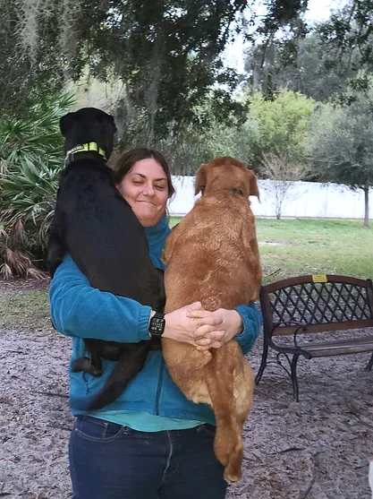

Learn about our mission, our history, and the heart behind the sanctuary.
A sanctuary built on compassion, community, and a lifelong love for dogs. We provide a safe, welcoming space where dogs can run free and humans can reconnect with nature. Our mission is to create a haven for dogs and a place of joy and connection for their humans.
A glimpse into the joy and freedom at Pott's Dog Sanctuary.
Support us financially. Your tax-free donations help us improve the park's facilities and much more. Please consider a gift of $1.00 per dog for each visit. For example, for one dog visiting two days per week, a gift of $100 per year would be appropriate.
As a private facility with no government funding, Potts Off-Leash Dog Sanctuary relies entirely on community support. Donations and volunteer efforts are essential to keeping the sanctuary open, thriving, and accessible to all. Your involvement—whether through giving, volunteering, or spreading the word—helps sustain this special place.
Make a Donation


Dr. Harold Potts, a retired veterinarian, has dedicated his life to serving both animals and people. After earning his DVM from Auburn University, he opened the Ruskin Animal Hospital and Cat Clinic in 1971. His contributions extend far beyond veterinary care.
Dr. Potts founded C.A.R.E. Inc., a rescue and adoption center for dogs and cats, and played a key role in establishing the Mary & Martha House, which provides shelter and support for women and children facing domestic violence and homelessness. He also created Potts Off-Leash Dog Sanctuary, a six-acre park open to the public.
His philanthropy reaches across borders—supporting children in Haiti with meals and education, assisting farmers with resources to grow and sell crops, and contributing to Smile Train, which provides free corrective surgery for children with cleft conditions.
“The more you give generously from the heart, soulfully and without any intention of getting anything in return, it comes back to you many times over.” — Dr. Harold Potts
His lifelong dedication to service continues to inspire the mission and values of the sanctuary.
The sanctuary continues to honor Dr. Potts’ legacy by providing a safe, joyful, and welcoming space for dogs and their families. We remain dedicated to preserving this land, strengthening our community, and ensuring the sanctuary thrives for generations to come.